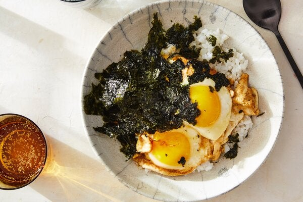

Description
Gyeran bap is a lifesaving Korean pantry meal of fried eggs stirred into steamed white rice. In this version, the eggs fry and puff up slightly in a shallow bath of browned butter. Soy sauce, which reduces in the pan, seasons the rice, as does a final smattering of salty gim, or roasted seaweed. A dribble of sesame oil lends comforting nuttiness, and runny yolks act as a makeshift sauce for the rice, slicking each grain with eggy gold. (You can cook the eggs to your preferred doneness, of course.) This dinner-for-one can be scaled up to serve more: Just double, triple or quadruple all of the ingredient amounts, using a larger skillet or repeating the steps in a small one.
Ingredients
- ½ tablespoon unsalted butter
- 2 large eggs
- 1 teaspoon soy sauce
- 1 teaspoon toasted sesame oil
- 1 cup steamed white rice, preferably short- or medium-grain
- 1 (5-gram) packet roasted, salted seaweed, such as gim (optional)
Steps
- Melt the butter in a small nonstick skillet over medium heat. Continue cooking, stirring occasionally with a rubber spatula, until the melted butter starts to darken in color from yellow to light brown, 1 to 1½ minutes.
- Crack in the eggs and drizzle the soy sauce and sesame oil on top, cooking until the whites puff up slightly around the edges of the pan and the translucent parts around the yolks start to turn opaque, 2 to 2½ minutes. Watch that the soy sauce doesn’t burn, removing the pan from the heat if necessary.
- Scoop the rice into a medium bowl and top with the fried eggs, including all of the buttery soy sauce drippings from the pan. Crush the seaweed directly over the eggs, piling it high. This will seem like a lot of seaweed, but it will wilt as you mix everything together with a spoon, which you should do to disperse the ingredients before eating.